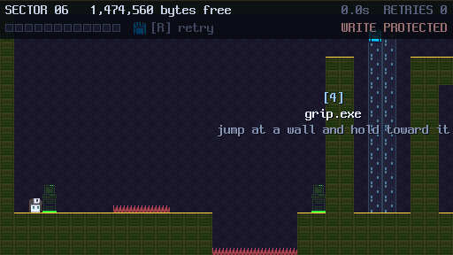
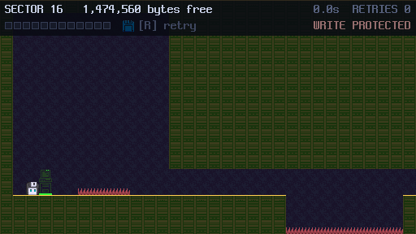
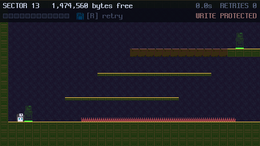
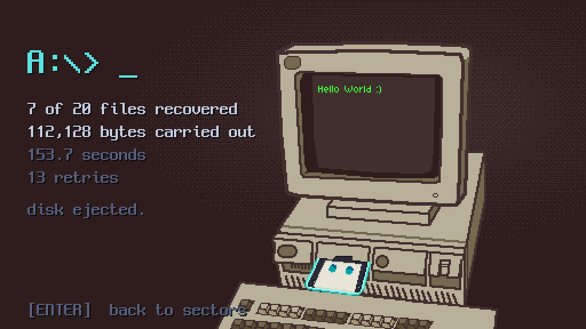

소개용으로 브라우저에 옮긴 버전입니다. 게임 화면을 한 번 클릭한 뒤 키보드로 조작해 주세요. 공모전에 낸 원본은 Windows용 exe 하나이고, 웹판은 세이브가 남지 않습니다.
01[용량에서 출발한 생각]
2PG 아케이드에서 1.44MB 게임 공모전이 열린다는 걸 본 건 8월 13일이었습니다. 마감은 9월 4일이었고, 규정은 압축을 풀었을 때 전체 용량이 1,474,560 바이트 이하일 것, 실행 파일과 런타임[주]을 전부 그 안에 넣을 것, 웹 게임이 아닌 독립 실행 파일일 것 정도로 단순했습니다.
주제를 정할 때 머릿속으로 따라간 순서는 이랬습니다.
용량이 제한되어 있다.
그럼 용량 최적화가 필요하다.
용량 최적화의 대표적인 예시라면 슈퍼마리오 초기작이다.
그럼 플랫포머로 가자.
1.44MB면 플로피디스크니까, 플로피디스크를 캐릭터로 쓰자.
플로피디스크는 담을 수 있는 용량이 비교적 제한적이다.
그럼 능력의 최대치를 용량으로 제한하는 게임을 만들어 보자.
작업은 처음부터 나눠 두었습니다. 기획과 디렉팅, 도트 아트, 그리고 지시는 제가 하고 기능 구현은 AI(Claude Code)가 맡았습니다. 그래서 이 글에 나오는 코드는 대부분 제가 직접 친 것이 아니고, 제가 한 일은 직접 플레이해 보고 '이건 아닌데'라고 말하는 쪽에 더 가까웠습니다.
02[만들기 전에 깔아 둔 것]
엔진을 고르기 전에 먼저 한 일은 AI가 일할 자리를 정리하는 것이었습니다. 앞으로 개발하면서 자주 쓸 규칙이나 맥락을 매번 다시 설명하지 않으려고 GameSetup이라는 착수 키트로 묶어 둔 게 있었습니다. 진행 로그와 결정사항, 결정 대기 목록, 게임 스펙 같은 문서 틀을 깔기도 하고, AI에게 준 지시를 그날그날 원문 그대로 남기는 규칙을 두거나, AI에게 맡길 일과 맡기지 않을 일을 나눈 표를 미리 정해 두는 식이었습니다. 이 저장소의 문서 구조도 전부 그 키트에서 시작했습니다.
그 키트에서 이번에 가장 많이 쓴 규칙은 '바퀴를 다시 만들지 마라'였습니다. 무언가 필요해지면 바로 만들기 시작하는 대신 AI에게 이미 있는 저장소나 라이브러리, 선례부터 찾아보게 했고, 그보다 먼저 '이 필요 자체를 설계로 없앨 수 있나'를 물었습니다.
엔진도 그렇게 골랐습니다. 조사해 보니 Unity는 스트리핑[주]을 최대로 해도 20MB가 넘고, Godot는 최소 템플릿으로도 10~25MB, GameMaker나 Love2D도 5~8MB라서, 런타임이 따라붙는 엔진은 애초에 들어갈 수가 없었습니다. 결국 C 언어에 raylib[주]을 정적 링크[주]로 묶는 쪽을 골랐는데, raylib 하나에 창과 입력, 오디오(miniaudio), 이미지 디코더[주](stb_image)가 이미 들어 있어서 따로 만들 게 거의 없었습니다. 첫날 빈 창 하나 띄우는 exe가 728KB였으니, 아무것도 안 한 상태에서 한도의 절반을 쓴 셈이었습니다.
용량을 줄이는 방법도 AI에게 조사부터 시켰습니다. 공식 배포판 raylib이 동적 C 런타임으로 빌드되어 있어서 그대로 쓰면 심사하는 PC에 VC++ 재배포 패키지[주]가 없을 때 실행이 안 될 수 있다는 걸 알고 소스에서 /MT[주]로 다시 빌드하기도 하고, 그림은 png를 압축된 채로 exe 안에 넣는 쪽을 고르거나, 음악은 XM 같은 트래커 파일[주]을 넣는 방법과 코드로 직접 합성하는 방법을 두고 빌드를 네 번 만들어 크기를 비교하는 일도 있었습니다. 폰트도 직접 그리지 않고 OFL[주] 라이선스로 공개된 neoDGM을 가져다 썼습니다.
03[처음 만든 것은 다리였습니다]
사실 첫 버전은 능력 게임이 아니었습니다. 플로피의 쓰기 방지 탭과 용량을 합쳐서, 블록을 흡수해 몸에 담았다가 다시 기록해서 다리를 놓는 게임을 먼저 만들었습니다. 목표 디스크를 회수하면 그게 용량 8칸을 차지하니, 돌아오는 길은 블록이 모자라서 더 어려워진다는 구상이었습니다.
일단 가장 단순한 형태로 만들어서 직접 해 보기로 했는데, 블록을 놓으면 몸과 겹쳐서 아예 움직일 수 없게 되기도 하고, 한 칸 나아가는 데 Shift와 E와 방향키를 번갈아 네 번이나 눌러야 하기도 하고, 재 보니 갈 때 4.3초 돌아올 때 3.5초로 오히려 돌아오는 길이 더 쉬운 일도 있었습니다. 버그와 조작은 고칠 수 있었습니다. 그런데 고치고 나서도 재미가 없었습니다.
블록을 놓는 동작은 결국 멈춰 서야 할 수 있는 동작이었고, 이동이 재미의 대부분인 플랫포머에서 핵심 동작이 이동을 끊는 건 맞지 않는다고 생각했습니다. AI 쪽에서 잰 왕복 시간도 같은 이야기를 하고 있어서 튜닝으로 끌지 않고 갈아엎었습니다. 맵은 평범한 플랫포머로 두고, 처음 떠올렸던 대로 능력의 최대치를 용량으로 제한하는 쪽으로 돌아갔습니다.
04[무엇을 들고 갈 것인가]
지금의 규칙은 단순합니다. 주인공 FD-1.44의 용량은 12칸이고, 능력 다섯 개는 전부 실행 파일이라 칸을 먹습니다. 다 합치면 20칸이라 항상 무언가는 두고 가야 합니다.
| jump2.exe | 2단 점프 | 5칸 |
| dash.exe | 공중 대시 | 4칸 |
| glide.exe | 활공 | 4칸 |
| grip.exe | 벽 붙기 · 벽 점프 | 4칸 |
| boot.exe | 점프력 +20% | 3칸 |
만들자마자 문제가 하나 생겼습니다. 2단 점프가 높이도 거리도 1등이라, 어느 관문이든 그것만 들고 가면 됐습니다. 수치를 아무리 만져도 2단 점프는 체공 시간을 두 배로 늘리는 능력이라 높이와 거리를 한꺼번에 가져가 버렸습니다.
여기서 제가 덧붙인 건 두 가지였습니다. 능력은 초록색 터미널 위에서만 바꿀 수 있게 하고, 왼쪽에서 화면을 지우며 쫓아오는 포맷 파동을 넣었습니다. 쫓기기 시작하니 '지나갈 수 있나'였던 질문이 '제때 지나갈 수 있나'로 바뀌었고, 만능 능력이라도 느리게 가면 소용이 없어졌습니다.
다만 처음에 말한 "스테이지마다 필요한 스킬셋을 다르게"를 그대로 만들면 정답이 하나뿐인 자물쇠가 된다는 지적을 AI가 했고, 대신 구간마다 서로 다른 능력으로 갈 수 있는 두 갈래 길을 깔자는 제안을 받아들였습니다. 터미널에서 앞을 내다보며 로드아웃[주]을 정하고, 출발하면 그때부터 쫓기는 흐름은 이때 잡혔습니다.

05[실행하지 않고 재는 게임]
레벨을 만들 때마다 처음부터 끝까지 직접 플레이해서 확인하는 건 3주라는 기간에 맞지 않았습니다. 스테이지가 20개이고 능력 조합이 여럿이라, 하나를 고칠 때마다 전부 다시 해 보는 건 사실상 불가능했습니다. 그래서 게임을 화면에 띄우지 않고 계산만 돌려서 확인하는 헤드리스[주] 검증을 처음부터 깔아 두었습니다. 자동차를 도로에 내보내기 전에 컴퓨터로 충돌 시험부터 돌려 보는 것과 비슷한 방식이라고 생각하면 될 것 같습니다.
이걸 하려면 구조를 하나 정해 둬야 했습니다. 얼마나 높이 뛰는지, 언제 죽는지 같은 게임 규칙은 전부 sim.c 한 파일에 넣고, 창을 띄우고 그림을 그리는 일은 main.c만 하게 나눴습니다. 규칙 쪽이 화면을 전혀 모르니 규칙만 따로 떼어 돌릴 수 있게 됩니다. GameSetup 키트에 가장 먼저 적어 둔 원칙이 바로 이것이었는데, C에서는 파일만 나누면 되니 비용도 거의 들지 않았습니다.
그렇게 만든 검사 도구가 test.bat입니다. 실행하면 능력마다 실제로 몇 칸을 뛰는지 계산하고, 20 스테이지의 구덩이와 벽 크기를 그 수치와 하나씩 맞춰 보고, 포맷 파동이 구간마다 얼마나 바짝 쫓아오는지와 장애물 사이 빈 공간이 얼마나 되는지까지 잰 다음, 하나라도 기준에서 벗어나면 실패를 띄웁니다. 지금은 검사 항목이 502개이고, 전부 도는 데 1초도 걸리지 않습니다.
== 능력별 도달 범위 (코드 기본값 tune_defaults 기준) == 높이 맨몸 2.4칸 boot 3.4칸 jump2 4.4칸 boot+jump2 6.3칸 거리 맨몸 5.4칸 boot 6.3칸 dash 10.2칸 jump2 8.4칸 (코요테 12px 포함. 대시는 중력이 멈추는 것까지 반영한 값이다) … == 밀도 == [ OK ] s02: 장애물 사이 안전지대가 13칸 이하 (7.8) [ OK ] s02: 무위험 연속 구간이 20칸 이하 (14) … == 파동 압박 (구간별 최악값) == [ OK ] s04: 어느 구간도 파동에 못 잡힌다 (2.06x) [ OK ] s04: 파동이 실제로 압박이 된다 (2.06x ≤ 2.6) … == jump2 관문 (원웨이 선반) == [ OK ] s09: jump2 단독으로도 못 오른다 (boot 를 같이 들어야 한다) [ OK ] s09: 건너편 벽이 멀어서 grip 으로 못 돌아간다 … == 전부 통과 == (0 실패)
test.bat 실제 출력에서 일부만 옮겼습니다. 전체 출력 보기 (502개 항목)첫날에는 봇[주]을 맵에 실제로 왕복시켜서 시간을 재기도 했는데, 03장의 4.3초와 3.5초가 그 결과였습니다. 그 뒤로는 봇을 매번 돌리는 대신, 점프 높이와 이동 속도 같은 물리 수치로 "이 구덩이는 이 능력 없이는 못 넘는다"를 계산하는 방식으로 관문을 판정했습니다.
이 검사가 없었으면 못 찾았을 문제도 있었습니다. 3구간의 두 갈래 길 중 벽 타기 쪽은 벽 아랫면이 바닥에서 4칸 위에 있어서 손이 닿지 않아 통째로 막혀 있었는데, 눈으로 보면 길이 두 개 다 있는 것처럼 보였습니다. 제가 플레이하다가 발견했다면 아마 '벽 타기는 쓸모없는 능력이구나' 하고 넘어갔을 것 같습니다. 다만 검사는 사람이 세운 기준만큼만 정확했고, 그게 다음 장의 이야기입니다.
사실 이 글에 들어간 GIF도 같은 구조로 찍었습니다. 사람이 키를 눌러 녹화하는 대신 sim.c를 헤드리스로 돌려서 죽지 않고 가장 멀리 가는 입력을 탐색하게 하고, 그렇게 찾은 입력을 실제 게임에 그대로 재생시키면서 화면을 저장했습니다. 규칙과 화면이 나뉘어 있으니 탐색은 규칙만으로 하고, 녹화는 그 결과를 그리기만 하면 됐습니다.

06[숫자가 틀려 있던 날]
20 스테이지를 다 깔았을 때 test.bat은 전부 통과였습니다. 그런데 처음부터 끝까지 해 보니 레벨이 너무 단조롭고 전체적으로 너무 쉬웠습니다. 그때 기준은 모든 관문이 정확히 능력 하나로 열릴 것, 여유는 1.5배 이상일 것, 파동은 플레이어 최고 속도의 절반을 넘지 않을 것 같은 것들이었는데, 그 기준을 전부 통과한 결과가 바로 그 단조로움이었습니다. 눈으로 하나씩 고치는 대신 맵 전체를 훑어서 수치를 재는 계측기를 먼저 만들게 했는데, 원인은 엉뚱한 곳에 있었습니다.
코요테 타임[주]과, 대시 중에는 중력이 멈춘다는 점을 빼먹은 옛날 계산이 문서에만 남아 있었습니다. 테스트 코드는 이미 맞는 값을 쓰고 있었는데 레벨은 그 문서를 보고 만들었으니, 대시 관문이라고 생각했던 6칸 구덩이 15개가 사실은 점프력 증가 하나로 넘어가는 구덩이였고, 대시가 꼭 필요한 평지 구덩이는 20 스테이지를 통틀어 하나도 없었습니다.
움직이는 위험이 하나도 없다는 것도 이때 알았습니다. 능력만 챙기면 실패할 방법이 없으니, 관문이 실력을 보는 게 아니라 소지품 검사를 하고 있었던 셈입니다. 그래서 밟으면 부서지는 발판, 번갈아 솟는 가시, 활공으로 타는 상승 기류 같은 지형을 넣고 20 스테이지를 전부 다시 깔았습니다. 적은 넣지 않았습니다. 적이 주는 긴장의 대부분은 타이밍인데, 그건 가시를 번갈아 솟게 하는 것만으로도 충분했습니다.

검사 기준도 다시 세웠습니다. 파동 여유는 하한만 있던 것을 1.25배에서 2.6배 사이로 양쪽을 막아서 파동이 너무 느려 위협이 안 되는 것도 실패로 치게 했고, 장애물 사이 안전지대는 13칸, 위험 없이 이어지는 구간은 20칸을 넘지 못하게 했습니다.
그 뒤로 계산된 값은 손으로 옮겨 적지 않고 테스트 출력을 그대로 붙여 넣게 했고, 저도 숫자를 볼 때 그 숫자가 어디서 왔는지부터 확인하는 태도를 가지게 되었습니다.
07[아무도 모를 구멍 하나]
아트를 준비하면서 플로피디스크를 꽤 오래 찾아봤습니다. 금속 셔터, 라벨 자리, 한쪽 모서리만 깎인 모양 같은 것들을 보다가 눈에 들어온 건 아랫부분의 작은 사각 구멍 두 개였습니다. 한쪽은 슬라이드 탭으로 막을 수 있는데, 막으면 쓰기가 금지되고 열면 쓸 수 있습니다. 반대쪽은 고밀도(HD) 디스크라는 표시라 늘 뚫려 있습니다.
이 게임에서 자기 자신을 다시 쓸 수 있는 곳은 터미널 하나뿐입니다. 그래서 평소에는 왼쪽 아래 탭을 막아 두고, 터미널 위에 섰을 때만 그 1픽셀을 투명하게 뚫어서 뒤의 배경이 비치게 그렸습니다. 어두운 색을 칠한 게 아니고 정말로 뚫려 있습니다.
WRITE PROTECTED
WRITE PROTECT DISABLED
터미널에 서면 HUD의 WRITE PROTECTED가 WRITE PROTECT DISABLED로 바뀌는데, 그 사실을 글자로만 두지 않고 몸으로도 보여 주고 싶었습니다. 같은 이유로 터미널 위에서는 몸 색이 터미널 화면처럼 반전되고, 눈 색도 평소의 청록에서 반대편인 붉은색으로 바뀝니다.
16×16 캐릭터의 1픽셀이라 아마 아무도 모를 거라고 생각해서, 여기에라도 적어 둡니다.
08[1.44MB 안에 담긴 것]
최종 exe는 1,039,872 바이트, 한도의 70.5%입니다. raylib과 C 런타임까지 전부 정적 링크로 넣어서, 따로 깔아야 하는 것 없이 Windows 기본 DLL만으로 돌아갑니다.
| 무엇이 | 어떻게 | 크기 |
|---|---|---|
| 빈 창 하나 (첫날) | raylib + CRT 정적 링크 | 728,064 B |
| BGM | 3채널 시퀀서[주]가 실행 중에 곡을 합성 | +4.0 KB |
| BGM (버린 안) | XM 파일 + 디코더. 곡 크기는 별도 | +63 KB~ |
| 효과음 13종 | 소리마다 파라미터 7개로 시작할 때 합성. 대부분은 오디오 백엔드 고정비 | +176 KB |
| 레벨 1개 | 문자열 대신 사각형 목록으로 저장 | 713 B |
| 한국어 지원 | 넣었다가 하루 만에 되돌림 | −18,432 B |
| 최종 exe | 남은 공간 434,688 B | 1,039,872 B |
노래 한 곡보다 노래를 틀어 주는 장치가 수십 배 무거웠다는 게 개인적으로는 제일 재미있었습니다.
한국어는 마감을 2주쯤 앞두고 힌트와 UI를 번역해 넣었던 적이 있습니다. 그런데 번역이 직역체였고, BGM을 '음악'으로 옮기는 식이라 꽤 날카로운 지시가 나가기도 했습니다.
고쳐서 다시 넣고 나서도 어감이 전체적으로 마음에 들지 않았습니다. 애초에 이 게임은 꺼져 가는 도스 시절 컴퓨터 안이 배경이라, FORMATTING DRIVE A: 같은 영문 시스템 메시지가 세계관에 더 맞는다고 생각했고, 결국 한국어를 전부 걷어냈습니다. 대신 그 과정에서 넣은 16px 폰트와 다시 잰 레이아웃은 남겼습니다.
09[AI와 나눠서 만든다는 것]
지시는 대체로 짧았고 오타도 많았습니다. 그 원문은 저장소의 docs/ai-log에 다듬지 않고 그대로 남겨 두었는데, 나중에 고쳐 쓰면 그건 그때의 기록이 아니게 된다고 생각했기 때문입니다.
역할을 나눠 보니 누가 무엇을 잘 잡는지가 생각보다 선명하게 갈렸습니다.
AI가 테스트로 먼저 찾은 것
- 벽 타기 루트가 벽에 손이 안 닿아서 통째로 막혀 있던 것
- 검증 코드가 4칸 구덩이를 17칸으로 재고 있던 것
- 2단 점프가 모든 관문의 상위호환이라는 것
제가 화면을 보고 찾은 것
- 상승 기류 그림이 아래로 흐르는 것처럼 보이던 것
- 튜토리얼 문구가 모든 스테이지 모든 구간에 다시 들어가 있던 것
- 2단 점프 관문을 벽 타기로도 넘을 수 있던 것
- 스테이지 버튼 테두리가 1픽셀 삐져나와 있던 것
숫자로 확인할 수 있는 건 AI가 저보다 훨씬 빨리 찾았고, 손으로 해 봐야 아는 것이나 눈으로 봐야 아는 건 대부분 제 몫이었습니다. 그래서 점프 높이나 중력처럼 손맛에 관여하는 수치는 전부 tune.txt라는 텍스트 파일로 빼고, 게임을 켜 둔 채 F5만 누르면 바로 다시 읽어 들이는 핫 리로드[주]를 넣었습니다. 다시 빌드하지 않고 제가 바로 만져 볼 수 있어야 서로 되돌리는 횟수가 줄어든다고 생각했습니다.
다만 무엇을 버리고 무엇을 남길지는 끝까지 제가 정해야 했고, 하루 만에 코어를 갈아엎은 것도, 한국어를 걷어낸 것도, 1픽셀 구멍을 뚫은 것도 결국 제 손으로 고른 일이었습니다.
10[마치며]

3주 동안 가장 많이 한 일은 만드는 것보다 버리는 것이었던 것 같습니다. 처음 만든 코어를 버리기도 하고, 문서에 적힌 숫자를 버리기도 하고, 하루 들인 번역을 통째로 걷어내는 일도 있었습니다. 1.44MB라는 제한은 용량만 제한한 게 아니고, 무엇을 남길지 계속 고르게 만들었습니다.
그리고 AI와 함께 작업하면서 가장 크게 느낀 건 어떤 단어로 설명하느냐에 따라 AI가 만들 수 있는 범위가 정해진다는 점이었습니다. 같은 내용을 설명해도 추상적이고 장황하게 말했을 때와, 도메인 지식을 써서 짧고 정확하게 말했을 때 돌아오는 결과가 확실히 달랐습니다.
첫날 위처럼 말했을 때는 방향 후보를 세 개 받아서 그중에 고르는 데서 끝났지만, 다음 날 아래처럼 말했을 때는 터미널 잠금과 포맷 파동, 구간이 나뉜 레벨이 그날 바로 들어갔습니다. 게임 쪽에는 코요테 타임이나 원웨이 발판[주]처럼 이름이 붙은 개념이 많은데, 그 이름을 알면 한 단어로 설명이 끝나기도 하고, 모르면 몇 줄을 써도 다른 게 나오는 일도 있었습니다. 검색도 마찬가지라서, 게임 용어 대신 그 문제가 다른 분야에서 불리는 이름으로 찾았을 때 이미 누가 풀어 둔 답이 나오는 경우가 많았습니다.
경험이 많지 않은 짧은 식견이지만, AI 덕분에 기능을 구현하는 일 자체는 이제 많이 쉬워졌다고 생각합니다. 그래서 개발자의 역량이 더 중요해지는 곳은 만들고 싶은 것을 정확한 단어로 설명하는 일과, 나온 결과를 직접 해 보고 맞는지 가려내는 일인 것 같습니다.
NOTE[용어 설명]
- 런타임 프로그램이 돌아가려면 함께 있어야 하는 부품 묶음입니다. 게임 엔진은 보통 이 부품을 수십 MB씩 게임과 같이 싣고 다닙니다.
- 스트리핑 빌드할 때 쓰지 않는 코드를 잘라내서 크기를 줄이는 기능입니다. 그래도 엔진의 기본 부품은 남습니다.
- raylib 창 띄우기, 키 입력, 그림 그리기, 소리 내기 같은 기본 기능만 모아 둔 C 언어용 오픈소스 라이브러리입니다. 엔진보다는 작은 공구 상자에 가깝습니다.
- 정적 링크 프로그램이 빌려 쓰는 라이브러리를 exe 파일 안에 통째로 넣어 묶는 방식입니다. 파일 하나만 있으면 실행되는 대신 그만큼 exe가 커집니다.
- 디코더 압축된 그림이나 소리 파일을 풀어서 화면에 그리거나 재생할 수 있는 형태로 바꿔 주는 코드입니다. miniaudio는 소리를, stb_image는 png 그림을 맡습니다.
- VC++ 재배포 패키지 Visual C++로 만든 프로그램이 실행될 때 필요한 Microsoft의 공용 파일 묶음입니다. PC에 깔려 있지 않으면 "dll 파일이 없습니다" 같은 오류가 뜨면서 게임이 켜지지 않습니다.
- /MT 위의 공용 파일을 PC에서 빌려 쓰지 말고 exe 안에 직접 넣으라는 컴파일러 옵션입니다.
- XM (트래커 음악) 악기 소리 조각과 악보를 한 파일에 담는 옛날 게임 음악 형식입니다. 파일은 작은 편이지만 재생하려면 전용 디코더가 따로 필요합니다.
- OFL SIL Open Font License. 저작권 표기와 라이선스 문구를 함께 배포하면 게임에 넣어 써도 되는 무료 폰트 라이선스입니다.
- 로드아웃 출발 전에 고르는 장비 구성입니다. 이 게임에서는 12칸 안에 넣은 능력 조합을 말합니다.
- 헤드리스 화면(머리)을 띄우지 않고 프로그램을 돌리는 방식입니다. 게임을 눈으로 보지 않고 규칙 계산만 빠르게 돌려서 결과를 숫자로 확인할 수 있습니다.
- 봇 사람 대신 정해진 규칙대로 키를 눌러 게임을 하는 자동 플레이 프로그램입니다.
- 코요테 타임 발판 끝에서 떨어진 직후 아주 잠깐 동안은 점프 입력을 받아 주는 장치입니다. 만화 속 코요테가 절벽 밖으로 걸어 나간 뒤에야 떨어지는 장면에서 이름이 왔습니다. 이 게임에서는 12px입니다.
- 원웨이 발판 아래에서는 뚫고 올라갈 수 있고, 위에서는 밟고 설 수 있는 한 방향 발판입니다.
- 핫 리로드 게임을 끄거나 다시 빌드하지 않고, 켜 둔 상태에서 바뀐 설정을 바로 다시 읽어 들이는 기능입니다.
- 시퀀서 악보에 맞춰 정해진 순간에 음을 내도록 순서를 관리하는 장치입니다. 여기서는 코드로 만든 작은 연주기입니다.